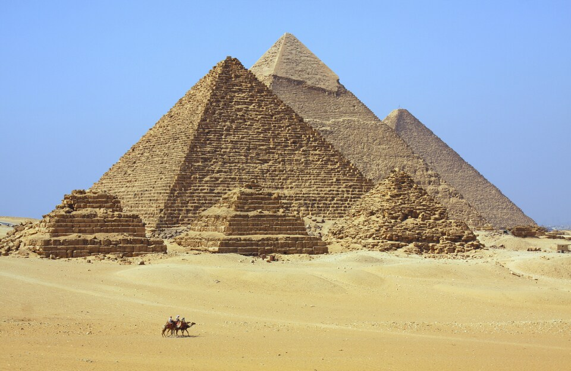
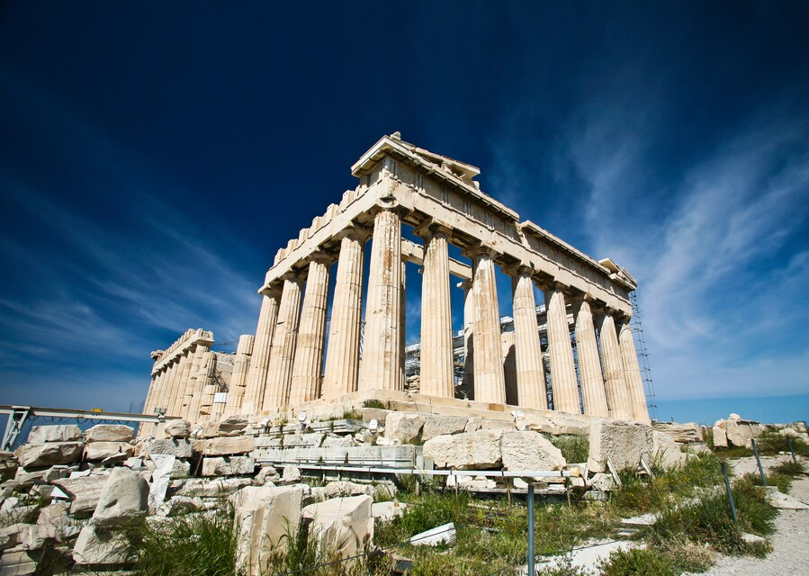
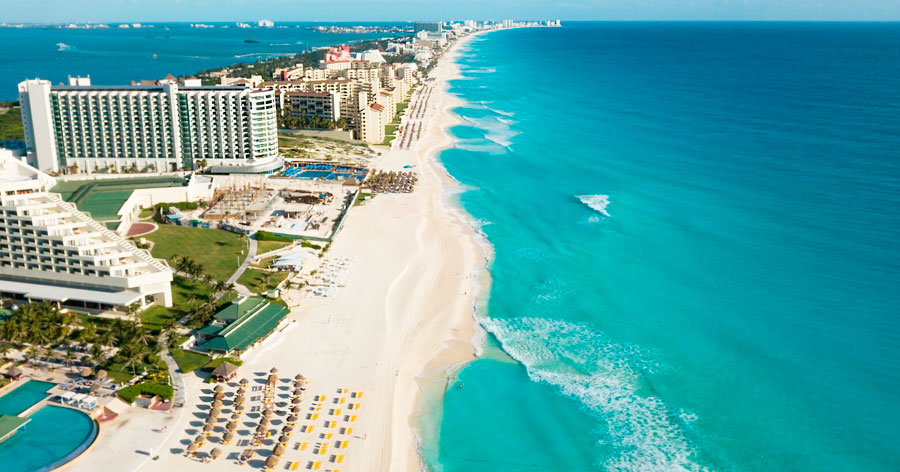

Contamos principalmente con los siguienes destinos turisticos
Giza, Egipto
Puede ser sorprendente saber que un desierto desolado en el Medio Oriente se ha convertido en una de las mejores atracciones turísticas del mundo, puedes considerar visitar la Gran Pirámide de Giza, una de las 7 maravillas oficiales del mundo antiguo. La tumba que fue construida alrededor de 2500 a.C. ahora es responsable de recibir más de 14.7 millones de visitantes por año.
Paris, Francia
Situada en el corazón de París, la ciudad más romántica del mundo, la Torre Eiffel se ha convertido en un símbolo universal de los viajes. Una visita a la Torre Eiffel encabeza muchas listas de categorías, algo no sorprendente teniendo en cuenta que unos 7 millones de visitantes al año se toman fotografías bajo el edificio de 81 pisos. No importa la hora en la que acudas, siempre habrá gente admirando este ícono francés.
Atenas, Grecia
En estas antiguas ruinas que cuelgan sobre el acantilado, se encuentra la acropolis de Atenas. A pesar de los proyectos de restauración en curso, multitudes de curiosos continúan acudiendo al sitio año tras año. La comunidad se está preparando para la gran cantidad de 4.5 millones de visitantes internacionales este año.
Cancun y la Riviera Maya, Mexico
Las playas de México en el Caribe son de blancas y finas arenas y aguas de un maravilloso color azul turquesa. Los sitios arqueológicos de Tulum y Chichén Itzá son dos de los más importantes de la cultura maya, especialmente el segundo que alberga decenas de construcciones y monumentos que evidencian el talento artístico y el avanzado desarrollo en astronomía de esta civilización. En la Riviera Maya, cerca de su principal ciudad, Playa del Carmen, se encuentran los parques ecológicos y de aventuras más excitantes de México y del Caribe, como Xplor, Xcaret y Xel-Há.
Tailandia
Los destinos más populares en Tailandia son especialmente: La capital, Bangkok, con el palacio real, grandes centros comerciales y numerosos templos. Phuket, en el sur del país, incluidas las islas circundantes como Ko-Phi-Phi. Las antiguas capitales Ayutthaya y Sukhothai con las ruinas de los antiguos palacios reales.